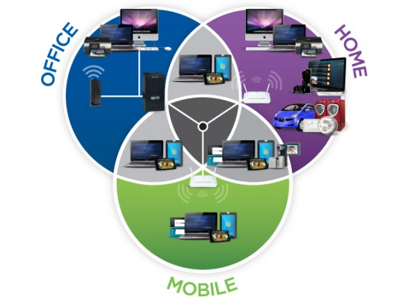
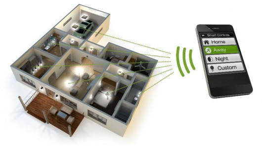

import webapp2
class MainPage(webapp2.RequestHandler):
def get(self):
self.response.headers['Content-Type'] = 'text/plain'
self.response.write('Hello, webapp2 World!')
application = webapp2.WSGIApplication([('/', MainPage),], debug=True)
application: your-app-id
version: 1
runtime: python27
api_version: 1
threadsafe: true
handlers:
- url: /.*
script: helloworld.application
application: guestbook
version: 1
runtime: python27
api_version: 1
threadsafe: true
libraries:
- name: webapp2
version: latest
handlers:
- url: /.*
script: guestbook.application
|  |  |
“ We are heading into a new era of ubiquity, where the users of the internet will be counted in billions, and humans may become the minority as generators and receivers of traffic. Changes brought about by the internet will be dwarfed by those prompted by the networking of everyday objects” - UN Report
Enable communication between devices to exchange useful information that create new value for human needs